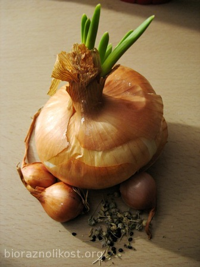

CRVENI LUK - Allium cepa
 UzgojLuk raste kao druga kultura, tj. nakon "izjelica gnojiva". Sadi se u rahlo tlo, toplo, bogato humusom. Sunčana gredica se priprema na jesen tako da se stavi stajski gnoj i kompost, te se zemlja malčira. Ako je potrebna dodatna prihrana, ovisno o mineralima i tvarima dostupnima u tlu, koriste se gnojiva koja sadrže kalij, primjerice drveni pepeo. Gnojiva sa velikim udjelom dušika moraju se izbjegavati jer će onemogućiti luku kvalitetnu zriobu. Nikada se ne smije gnojiti svježim gnojem.
Njega gredice s lukom svodi se na na rahljenje tla i uklanjanje korova. Kod okopavanja treba pripaziti na plitko korijenje.
Korijen intenzivno raste na temperaturi tla 8-10°C. Listovi se najbrže razvijaju na temperaturi 18-20°C. U uvjetima dugog dana i povišenih temperatura 20-25°C (počinje već od temperature tla 15°C) započinje formiranje lukovice.
Danas se najčešće sadi holandski žuti, iako bi bilo bolje obnoviti naše stare sorte luka: turopoljski, hercegovački, ptujski, kupusinski jabučar, rapski.
SadnjaLuk se može uzgojiti sijanjem sjemena ili sadnjom lučica (drugi naziv arpadžik). Luk je trogodišnja biljka. U prvoj godini iz sjemena se dobije lučica. U drugoj godini iz lučice se dobije glava luka, a u trećoj godini se iz glave luka dobije sjeme. Gustim sijanjem sjemena luka dobiju se sitne lukovice koje na godinu služe kao sadni materijal. Luk dobiven direktno iz sjemena prorjeđivanjem nasada, kako bi mu se omogučilo da naraste veći, je kvalitetniji od onog dobivenog iz jednogodišnjih lučica. Uzgoj luka iz sjemena obavlja se u tople gredice čime ubrzavamo njegov rast, no luk je dosta otporan prema niskim temperaturama, sjeme niče već na 3-5°C, ali mu je optimalna temperatura za klijanje 15°C. Kod uzgoja luka bitan je odnos temperature tla i zraka. Ako je temperatura zraka viša od temperature tla lišće će brže rasti, a korijen se slabije razvijati. Razmak redova u izravnoj sjetvi luka se razlikuje od sadnje lukovica. Otprilike se radi razmak 15 cm između redova, dok u redu taj razmak nije bitan jer nakon nicanja možemo raditi prorijeđivanje kod kojeg ostavimo samo najjače biljke (na nekih 12 cm). Dubina sjetve je 1-1,5 cm. Na 1 m2 može se dobiti 1 — 1,5 kg lučica.
Lučice su lukovice veličine lješnjaka (1,5 — 2,4 cm) koje se sade u travnju (ako je toplije vrijeme već i u ožujku) u redovima na razmak 20-25 cm. Biljkama je između potreban prostor od cca 10 cm, jer će iz svake male lukovice izrasti veliki luk. Ako sadimo veće lučice,jedan dio biljaka će iste godine otići u sjeme. Kod nas je učestalija sadnja luka iz lučica. I svakako vrijeme sadnje nije jednako za kontinentalni i mediteranski dio Hrvatske. U južnijim krajevima sadnja počinje već u veljači. Luk razvija plitko, razgranato korijenje i ako se sadi ranije dok nisu veće temperature lučice će se bolje ukorijeniti. Sa porastom temperature nadzemni dijelovi će brzo potjerati, pa ukoliko se korijen nije dovoljno dobro razvio, neće biti u mogućnosti dobro opskrbljivati cijelu biljku hranjivima, pa će cijela biljka zaostati sa razvojem. Zato je bitno ne kasniti sa sadnjom.
U prvoj fazi vegetacije potrebno mu je više vlage, pa ako je suša potrebno je i dodatno zalijevati ili malčirati da se zadrži vlaga. Pod kraj vegetacije u vrijeme dozrijevanja više mu odgovara suho i toplo vrijeme.
Izvrsno uspjeva u mješovitoj kulturi s mrkvom jer luk štiti mrkvu od mrkvine muhe, a mrkva štiti luk od lukove muhe.
Allium cepa i homeopatijaU doba stare Grčke luk je bio vrlo cijenjen i konzumiran u znatnim količinama. U srednjem vijeku smatralo se da zbog jakog mirisa luk lijeći mnoge bolesti. U homeopatiji se koristi za liječenje prehlade i gripe jer uzrokuje suzenje očiju i curenje nosa, simptome jednake kod oboljelih od dvaju navedenih bolesti. Crveni luk se rijetko u prirodi nalazi samoniklo. Zabilježen je jedino na području istočne Azije.
Čuvanje sjemena
Sjemenke luka su kratkoga životnog vijeka, 1-2 godine, a nakon toga klijavost naglo pada. Da ne bi došlo do međusobnog križanja potrebno je različite vrste iz porodice luka saditi na međusobno većem razmaku. Preporuća se da to bude 2-5 kilometara, a ako to nije moguće cvijetovi se zaštite vrećicamam, a kada dođe vrijeme za oprašiti cvijet, najbolje je to učiniti rano u jutro ili kasno na večer, jer insekti tada nisu aktivni. Vrečice se uklone i lagano kistom pređe preko cvijetova. Sjemenke treba pustiti da sazriju i da se osuše na biljci.
Mladi lukAko luk posađen iz sjemena nema dovoljno sati dnevnog svjetla neće doći do razvoja lukovice i na taj naćin se dobiva mladi ili proljetni luk. Obično se sade krupnije lučice koje su prekrupne za proizvodnju glavice luka (2,5 – 3 cm). Sade se plitko u jame 10 x 10 cm od druge polovine rujna ili u rano proljeće. Mladi luk se bere nakon cca 1,5 mjesec kada nadzemni dio dosegne visinu od 30-40 cm. Zeleni dio je bogat vitaminom C.